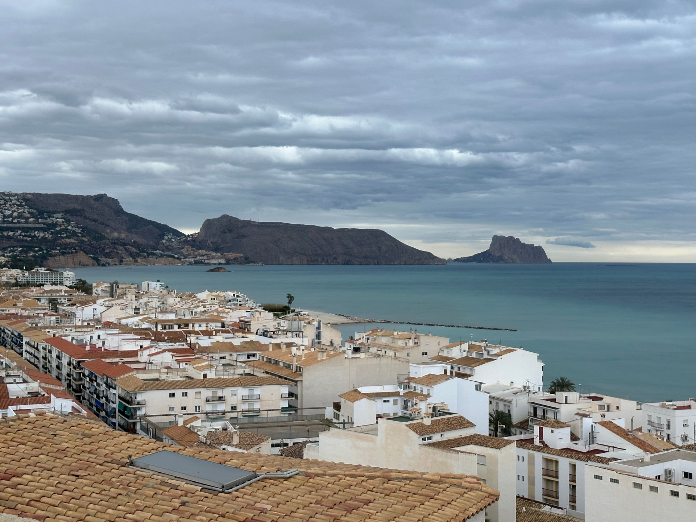

Three decades bringing clarity to the Costa Blanca
Not every cleaning company masters glass. The salt spray from our beaches, the limescale in local water and the height of our buildings demand a technical know-how that only years can deliver.

Own equipment: Pure-water poles and lifting systems.
Certified safety: Strict compliance with work-at-height regulations.
Shine guarantee: If it's not perfect, we re-do it at no extra cost.
Why choose our window cleaning service?
Experience is more than a number — it's the guarantee that we know how to treat every type of glass (tempered, laminated, mirrored) without risking scratches or limescale marks.
Lasting results: We use products that repel dust and rain so the glass stays clean for longer.
Total safety: We hold Public Liability Insurance and strictly comply with occupational risk prevention regulations.
Own equipment: From cradles and aerial work platforms to the latest carbon-fibre water-fed poles.
How do we achieve an invisible-glass finish?
The secret of our window cleaning service lies in the water treatment. We use osmosis and pure-water systems, allowing us to:
Remove limescale and minerals that scratch glass.
Avoid aggressive chemicals (eco-friendly cleaning).
Achieve a natural dry with no droplet marks or cloth traces.


Glass experts in Benidorm and the region
Although our headquarters is in Benidorm, our window cleaning service travels daily to Altea, Villajoyosa, La Nucía and Alfaz del Pi. We cover the entire Marina Baixa with the speed only a local company can offer.
Common questions about professional window cleaning
How often should a business's windows be cleaned?
Frequency depends on the type of business and location. In commercial areas, weekly or fortnightly cleaning is recommended to keep shopfronts impeccable.
Can you clean windows at height?
Yes. Our team has the specialised tools and systems to clean glass on buildings and glazed façades safely.
How often should I hire a window cleaning service?
For businesses, we recommend weekly or fortnightly cleaning. For homes and communities, a quarterly deep clean is usually enough to maintain them.
What exactly does the service include?
We clean both sides of the glass, the frame, the tracks and, if needed, remove stickers or construction residue.
Bring back the light to your spaces today
Don't let dirty glass cloud your business image or the comfort of your home. Trust three decades of experience.